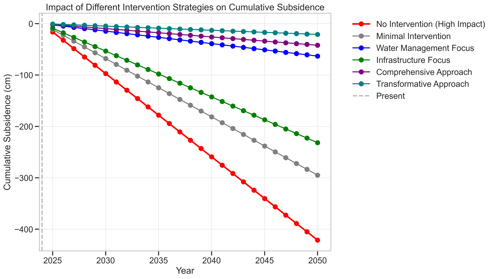

North Jakarta's Race Against Subsidence: A Critical Call for Evidence-Based Intervention
March 22, 2025
North Jakarta stands at a critical juncture in its battle against land subsidence—an existential threat exemplifying the complex interplay between human activity, geological processes, and climate change impacts. Home to more than 1.5 million residents and vital national infrastructure, this coastal region is sinking at alarming rates of 10-25 centimeters annually in some areas—among the fastest worldwide (Abidin et al., 2023). The convergence of rapid subsidence with accelerating sea level rise creates what can be termed a "Jakarta double hazard," presenting unprecedented challenges for urban resilience and adaptation.
The Multidimensional Crisis and Pathway to Resilience
The primary driver of Jakarta's subsidence crisis lies in unregulated groundwater extraction. As the metropolitan population expanded exponentially and formal water infrastructure failed to keep pace, groundwater became the default water source for millions of residents and businesses. This intensive extraction has depleted aquifers and caused irreversible land compaction. Urban development has exacerbated this phenomenon through loading from massive buildings and infrastructure, while simultaneously reducing permeable surfaces necessary for aquifer recharge (Zhao et al., 2022).
The temporal dimension of this crisis reveals a rapidly closing window for effective action. Under current trajectories, key coastal areas will sink below mean sea level between 2027 and 2035. Tanjung Priok Port—Indonesia's busiest shipping hub handling 50% of the nation's non-oil cargo—faces functional impairment by the 2030s without major intervention (Indonesia Port Corporation, 2024). By 2050, approximately 40% of North Jakarta's total area could be permanently below sea level in the business-as-usual scenario (Takagi et al., 2022).
Evidence-based analysis reveals a clear hierarchy of effective interventions. Groundwater regulation emerges as the most urgent and impactful near-term measure, with calculations showing that strict policies implemented within the next five years could reduce subsidence rates by 60-70% if properly enforced. The return on investment for such regulatory measures is substantial, with each dollar spent potentially preventing 7-10 dollars in future damages (World Bank, 2024).
While Jakarta's case may seem extreme, it represents a harbinger of challenges facing numerous coastal megacities worldwide. Bangkok, Ho Chi Minh City, Manila, and parts of Shanghai experience similar subsidence dynamics, though generally at lower rates. The approaches, successes, and failures in Jakarta will provide crucial lessons for global coastal urban adaptation strategies.
The most striking finding from temporal analysis is the identification of 2030 as a critical threshold year. Actions taken before this date yield dramatically higher returns than those implemented after. This creates a clear policy mandate: the next five years represent a vital window during which effective intervention could save vast areas of North Jakarta from submergence.
For those seeking deeper engagement with this complex phenomenon, I have developed an interactive simulation platform accessible at https://github.com/R1-AK/jakarta-subsidence-climate-adaptation This analytical tool allows users to explore the spatiotemporal dynamics of subsidence through a scientifically rigorous yet intuitive interface. By manipulating variables such as groundwater extraction rates, urban development patterns, and regulatory interventions, users can visualize projected outcomes across different Jakarta districts through 2050. The simulator incorporates comprehensive datasets including InSAR measurements, sea level trends, groundwater extraction records, and urbanization patterns to provide nuanced projections under various climate and policy scenarios. This platform serves both as an educational resource and a decision-support tool for stakeholders navigating Jakarta's subsidence challenges.
The Jakarta subsidence crisis illustrates both the necessity and challenge of translating scientific analysis into policy action. The data is clear, the projections robust, and the cost-benefit calculations compelling. What remains is the political will and institutional capacity to implement solutions at the required scale and speed. Jakarta's future literally depends on it.